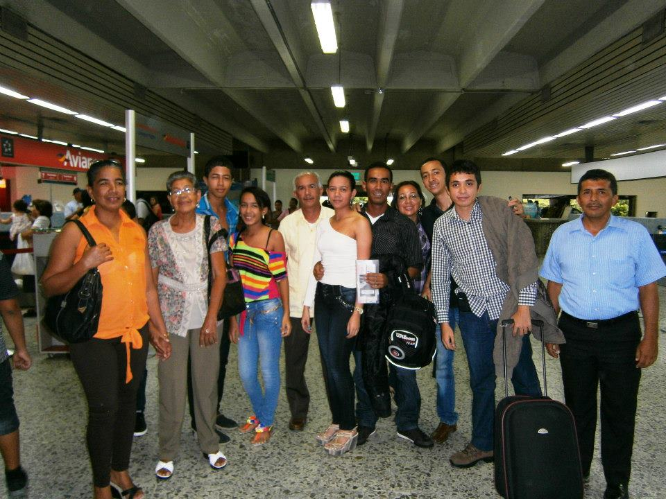
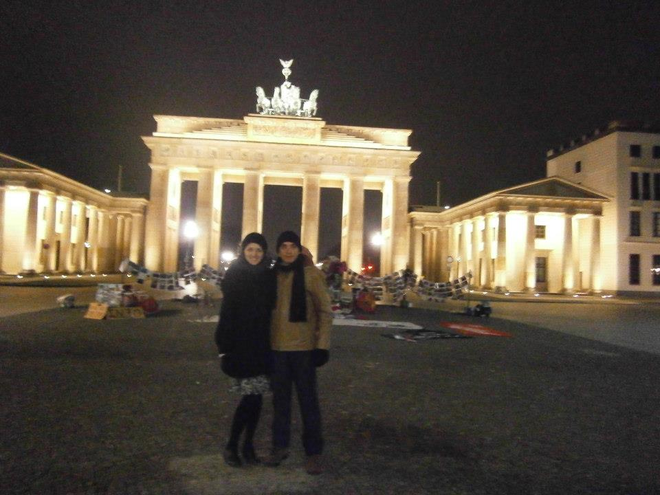
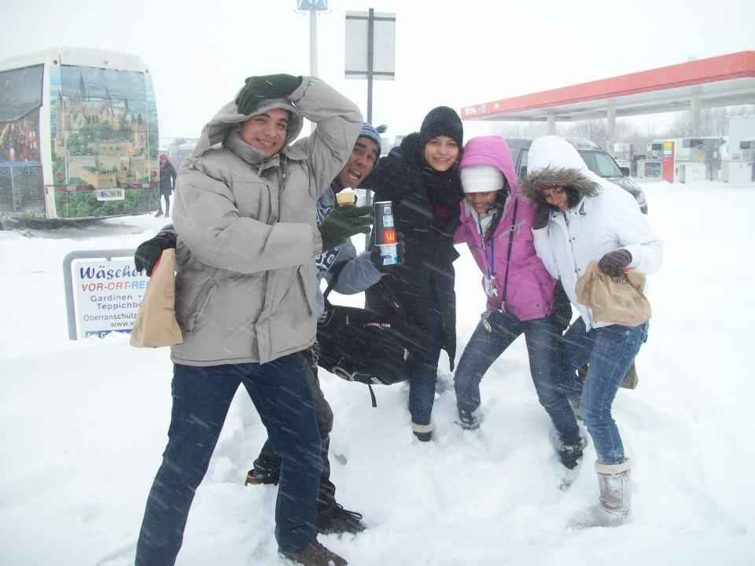
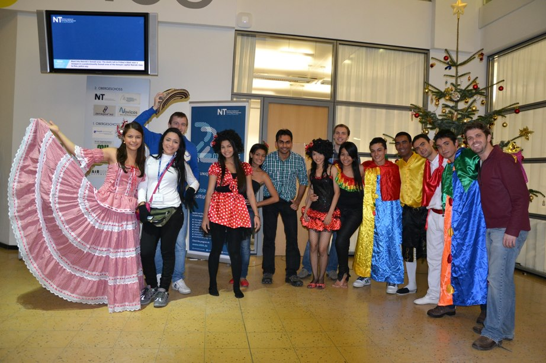
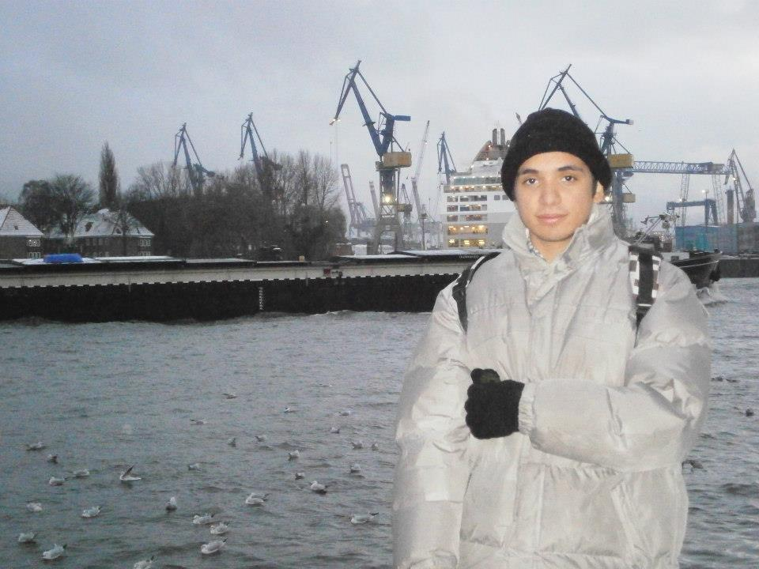

This short webpage summarises one of the most exciting and remarkable experiences of my whole life, My trip to Germany.
It's 2 December 2012. Finally, my dream comes true. The trip to Germany is happening!
My classmates and I are thrilled of the moment. We couldn't believe that we would put our feet on foreign lands for the first time in our lives.
We're at the airport, saying bye to our parents. The first flight is about to take us to the capital, Bogotá. The last time I have a flight was 10 years ago. I was so nervous and excited.
We've been split up into two groups, as it was how the university decided we would fly with the aims of saving costs. The flight itinerary of my group was Barranquilla-Bogotá-Frankfurt-Berlin, whereas the other group had Barranquilla-Bogotá-Paris-Berlin.
| Group 1 | Group 2 |
|---|---|
| Barranquilla | Barranquilla |
| Bogotá | Bogotá |
| Frankfurt | Paris |
| Berlin | Berlin |
The cities we visited were:
The first memory that comes to my mind is icy coldness. I'm in a moment of sheer euphoria as it's the first time I was facing snow in my entire life.
It's the first and last city I visit. I can proudly say I touched the Berlin wall and was in front of the Checkpoint Charlie. Of course, the Brandeburg Gate wouldn't escape from the itinerary.
We have the chance to talk to students and professors from the University campus we are visiting. We make some networking connections in that city.
For some reason, when Dresden is in my mind, all I see is white, white, and more white!!!
Heavy snows are falling on the streets, and a couple of car accidents due to slippery roads I'm able to see. The city is covered by a dense snow layer, but that's not an impediment to having ice cream at the nearest Maccas.
In love with this city!
Wearing customs, my fellows and I give an entree of our cultural roots to university students at the NIT University of Hamburg.
Not only are we having the joy of visiting the seaport, but also one of the largest worldwide.
